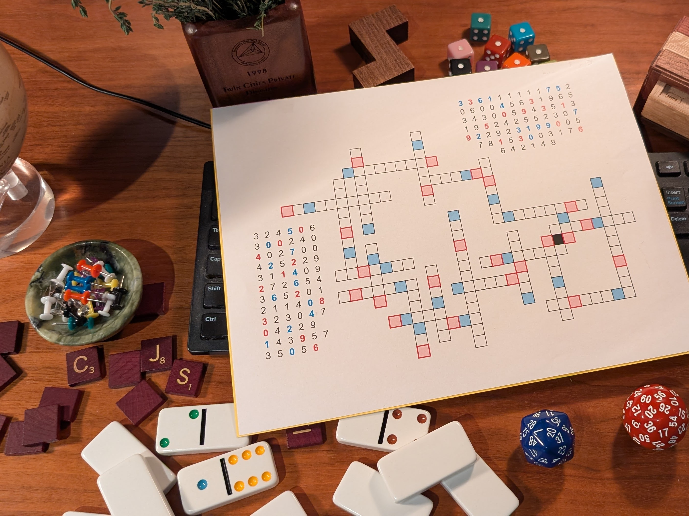
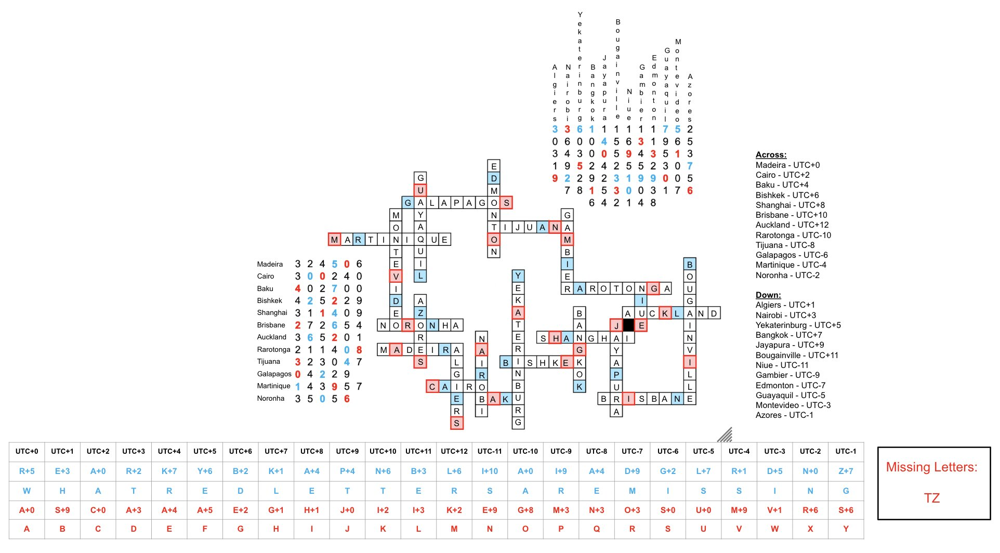

We are given absolutely no instructions other than the below image (not even the format of the answer).

Puzzle link here.
We are given absolutely no instructions other than the below image (not even the format of the answer).

Puzzle link here.
What an absolutely brutal puzzle with so many steps that are based upon the subtlest of hints. Easily the trickiest puzzle from Jane Street I have solved, and judging from the small leaderboard, this is certainly the hardest one Jane Street has put out in a long while.
It took several weeks of pondering and percolating before I made any real progress. My first observation was that there seemed to be a year theme going on - the 2026 on the dice, the 1998 on the plant pot, the 2016 spelled out on the dominos, and the title of the puzzle being timely journey. While the year angle was a dead end, it did echo the more broad theme of time in this puzzle.
It then became clear that the crossword numbers were coordinates, given in degree/minute/second notation. The format fit nicely: the latitudes (across clues) were at most 6 digits long, with each group of two digits when read right to left never exceeding 60. The down clues then had to be longitudes, as again, the first three digits never exceed 180, with the minutes and seconds numbers also never exceeding 60.
This became confirmed when the scrabble tiles and dominoes read as: "C JS 2016 - 04", saying to "see" Jane Street's April 2016 puzzle, which also had similar cryptic groups of numbers that turned out to be coordinates. While a cute obervation, it didn't really bring any new information that I hadn't already suspected.
The big breakthrough, however, is noting that the plant pot contained thyme. With the pentomino acting as the the letter "Z" and the group of ones dice, we have the phrase "Time Zones" (Thyme z+ones). Therefore, each coordinate line had to refer to a different time zone name!
An interesting obvervation is that on the plant pot, it says "1998 Twin Cities Private Division" for 1997-98 Minnesota State High School Math League, of which one the top scorers was somebody named Andy Niedermaier, who is now a trader at Jane Street and a puzzle enthusiast, so I'm guessing he most likely came up with this puzzle.
After lots of toying around, I managed to fill in the crossword with the time zone names. After this step, I thought the solution would easily present itself. But instead, noting the shift key on the dirty keyboard, gave the idea of shifting the coloured letters up by their corresponding coloured numbers in the clue. Doing so for the blue letters when starting at Madeira (UTC+0) and going East (UTC +1, +2, +3, ... -1), we spell out the phrase "WHAT RED LETTERS ARE MISSING".
Now I wasn't sure if we were to supposed to shift the red letters up or down, shifting the red letters up, we get every letter except 'TZ', and shifting down we get 'BEHNOPQRTZ' as the missing letters. I wasn't sure which was the answer, but noticing the dice that say 20 and 26, corresponding to the letter T and Z (also referring time zones), and when shifting the red letters up and arranging them from UTC+0 offset and going East, if does spell out the alphabet (ABCD..), with T and Z missing of course. The full solution is shown below:

While this was fun and all, I was a little let down by the anticlimatic final answer. It was so simple and it was hidden in the dice all along - an observation that I noticed way before doing all this work. Now it makes sense why they didn't mention the format of the final answer. The journey of this puzzle was much more satisfying than the final answer/destination.
{kind=link}